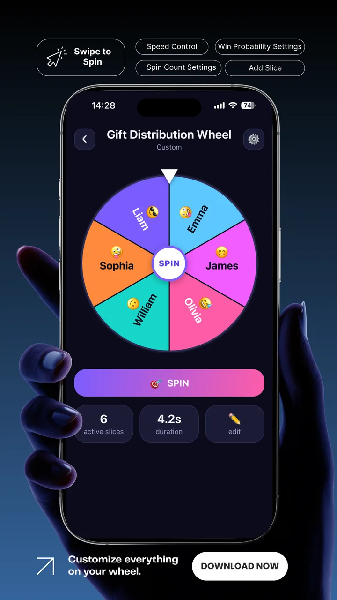
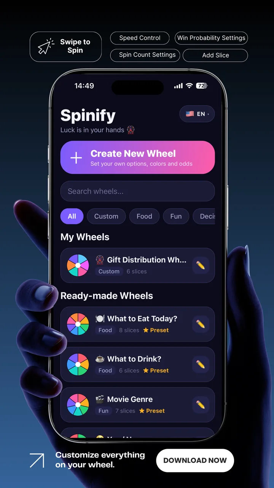
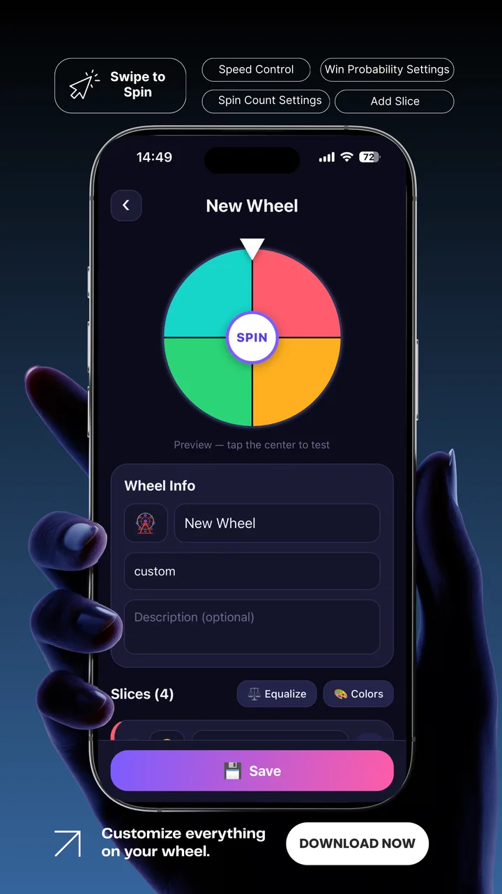
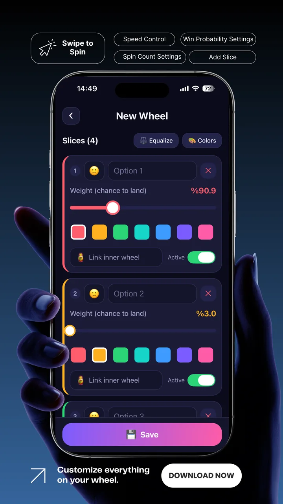
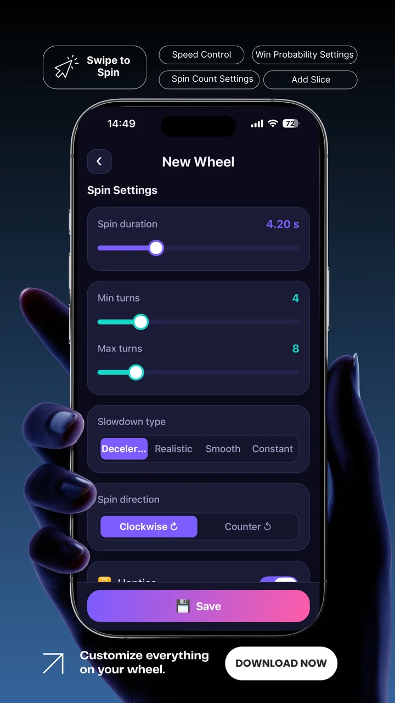
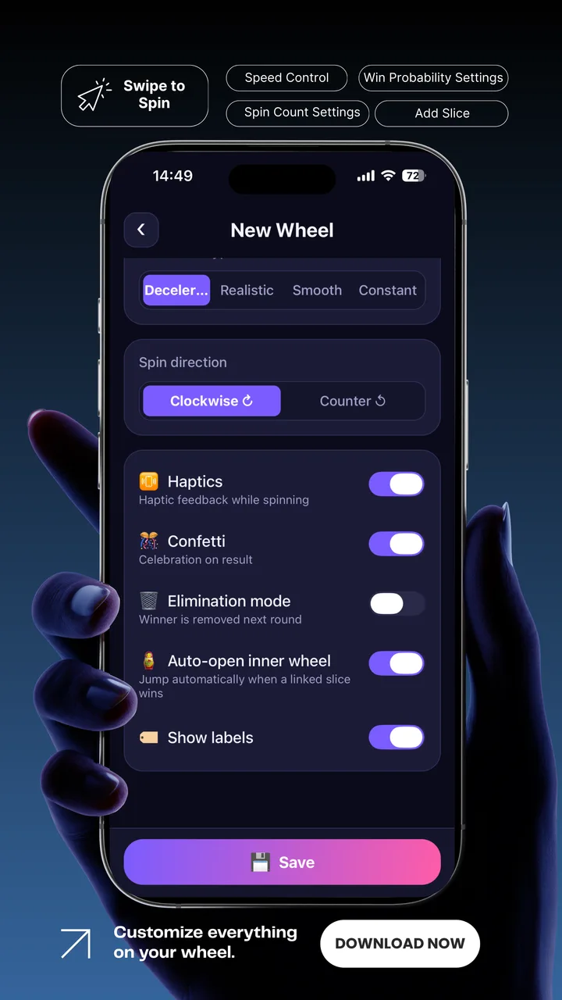
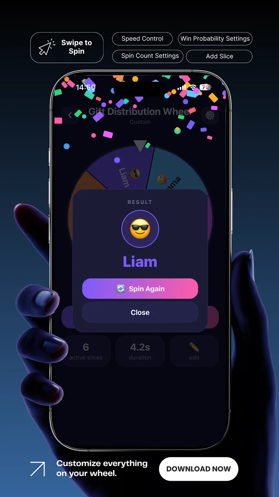
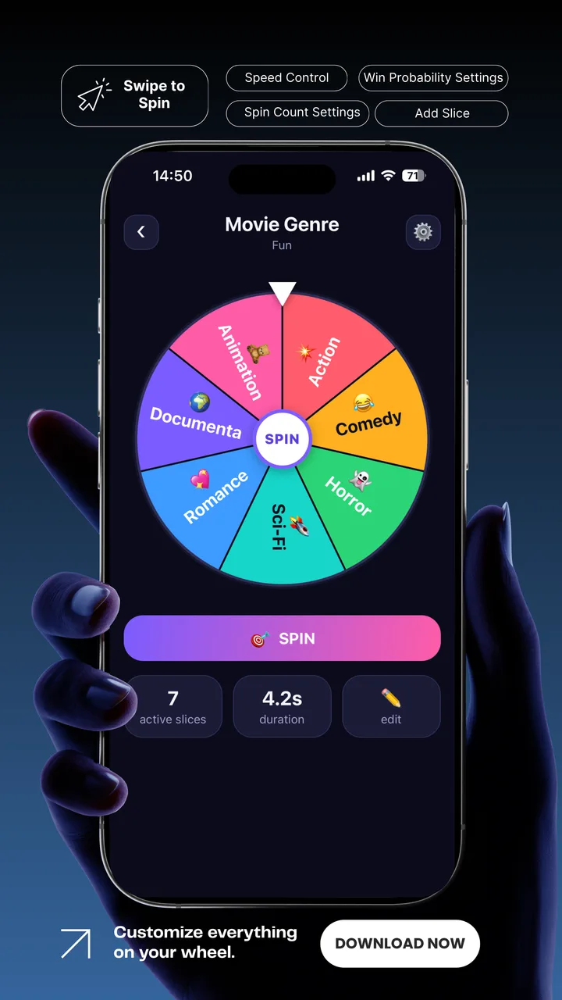

Spinify
Şans Senin Elinde
Spinify; yemek seçimi, parti oyunları, ev işleri, egzersiz, tatil fikirleri ve günlük kararlar için gelişmiş bir çark uygulamasıdır.
Spinify Ekranları
Uygulamadan ekran görüntüleri.

Çark Kütüphanesi
Özel çarklarını ve hazır şablonları keşfet.

Akıcı Çevirme
Gerçekçi fizik ve konfeti ile sonuç.

Canlı Düzenleyici
Dilimleri canlı önizleme ile düzenle.

Olasılık Ağırlıkları
Dilim boyutu gerçek gelme şansını yansıtır.

Hazır Çarklar
14 şablonla anında başla.

İç İçe Çarklar
Çok adımlı kararlar için zincirle.

Kutlama Sonucu
Konfeti ile kazanan dilim.

Dönüş Ayarları
Süre, tur ve yavaşlama kontrolü.
Hazır Çarklar
14 yerleşik çarkla anında başla.
Bugün Ne Yesek?
Akşam yemeği kararsızlığına son.
Ne İçsem?
Kahve, çay, limonata ve daha fazlası.
Film Türü
Aksiyon, komedi, korku ve daha fazlası.
Evet / Hayır
Hızlı karar için klasik çark.
Karar Çarkı
Kesinlikle evet, belki, sonra, hayır.
Doğruluk mu Cesaret mi?
Oyun gecesi için ideal.
Ev İşi Kim Yapacak?
Bulaşık, süpürme, çöp veya izin günü.
Egzersiz Çarkı
Şınav, squat, plank veya dinlen.
Hesabı Kim Ödeyecek?
Sen, ben, o veya ortak.
Şanslı Sayı (1-8)
1 ile 8 arasında rastgele sayı.
Ceza Çarkı
Şarkı, dans, fıkra veya affedildin.
Tatil Nereye?
Deniz, dağ, şehir veya evde kal.
Ödül Çarkı
Büyük ödül nadir gelir.
Akşam Ne Yapsak?
İç içe çark ile yemek veya film seç.
Neden Spinify?
Olasılık, tasarım ve akış üzerinde tam kontrol.
Gerçek Olasılık
Dilim ağırlıklarını ayarla.
İç İçe Çarklar
Çok adımlı kararlar için zincirle.
Eleme Modu
Kazananı her turda çıkar.
Yerel Kayıt
Çarklarını cihazında sakla.
24 Dil
Arayüz diline uyum sağlar.
Modern Koyu Arayüz
SVG çarklar ve akıcı animasyon.
Spinify Nasıl Çalışır?
Fikirden sonuca saniyeler içinde.
1) Çark seç veya oluştur
Hazır şablondan başla veya dilim ekle.
2) Ağırlık ve ayarları yap
Olasılık ve dönüş hızını ayarla.
3) ÇEVİR'e bas
Gerçekçi yavaşlama ile izle.
4) Sonucu gör
Konfeti ile kazananı gör.
Kararı Çarka Bırak
Spinify, Sogepps ailesinin 4. uygulamasıdır.